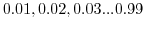
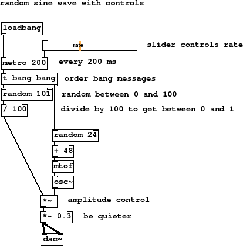

Subsections
Figure 4 summary
- slider controls rate
- every 200 ms
- order bang messages
- random between 0 and 100
- divide by 100 to get between 0 and 1
- amplitude control
- be quieter
A slider can be placed anywhere you want to vary something by connecting
directly to it. In this case we have slider outlet going to metronome
period inlet. You should set slider properties such as colour, range
and size by right clicking and using the [properties] dialog. Range
is most often important. Here the slider goes between 10 and a few hundred,
so that we never tell the metronome to have a period of zero (which makes
a very strange noise sometimes). Another useful property to set is
[init], which makes the slider remember the last value set when
you save and reload a patch.
Now we vary the amplitude of the oscillator so some notes
to play more more quietly and some more loudly.
Thinking about appropriate ranges, to scale a signal we want to multiply
it by a number between 0 and 1. At zero we will have complete silence, because
anything multiplied by 0 is 0, and at 1 the signal will be at its normal
strength. But [random] only gives us integers. To get a normalised
signal, 0 to 1, we divide the output of [random]
by the same value as its range minus one. Using the value of 100 we get one hundred possible
steps now mapped between 0 and 1,
 which can be used
to scale the audio. Notice that it doesn't matter which side of the (symmetrical)
[*~] object we connect control signal or audio signal to.
Sometimes it matters which way you connect objects because of the order you want
things to happen. A trigger is like a splitter that can be used to keep program diagrams
neat and logical. It's evaluation order goes right to left so in this case the random
number affecting frequency is computed before the random number for amplitude. You will
hear no difference if you swap the ordering on this simple patch, but in more complex
Pd programs the ordering becomes important.
Figure 4:
random-sine-controls
|

|
D-random-sine-controls-play.pd
D-random-sine-controls-play.ogg
Andy Farnell
http://obiwannabe.co.uk/